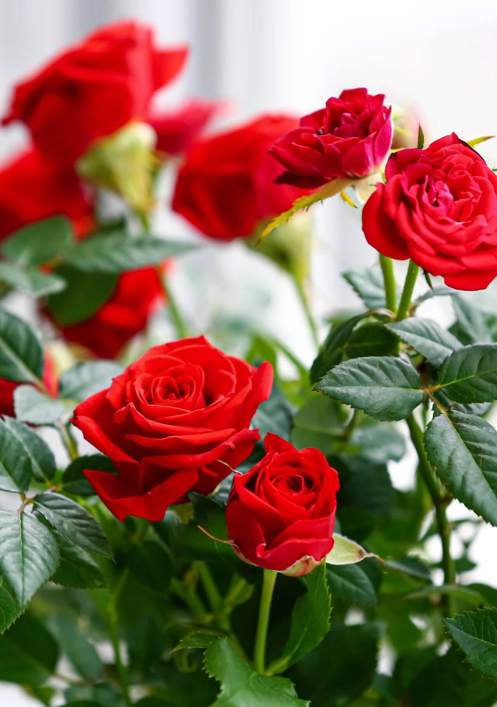
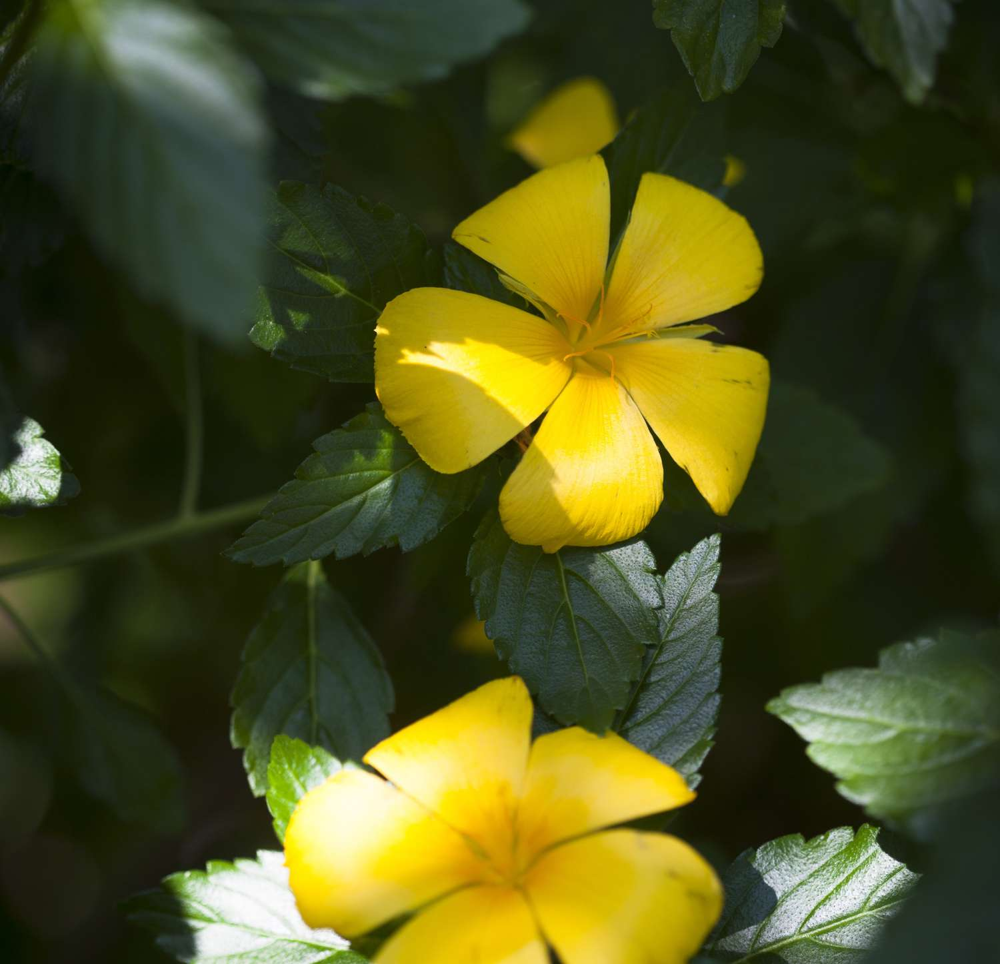

SIGNIFICADO CULTURAL DE LOS DE COLORES DE LA FLORES
El significado cultural de los colores de las flores comunica emociones y mensajes simbólicos profundos. Rojo significa amor apasionado y deseo, blanco representa pureza y elegancia, amarillo simboliza amistad y alegría, rosa expresa gratitud y gracia, púrpura denota realeza y admiración, azul refleja tranquilidad y naranja transmite energía.
- ROJO: Asociado indiscutiblemente con el amor apasionado, la fuerza y la energía. Ideal para San Valentín o aniversarios, también representa admiración y respeto profundo.
- BLANCO: Símbolo de pureza, inocencia, elegancia y humildad. Muy utilizado en bodas y funerales para expresar condolencias, respeto y nuevos comienzos.
- AMARRILLA: Evoca alegría, amistad y energía positiva, perfecto para celebrar logros. En algunas culturas, puede indicar celos o un amor que disminuye, pero generalmente se asocia a la felicidad y buenos deseos.
- ROSA: Representa gracia, delicadeza, gratitud y alegría juvenil. Las tonalidades suaves indican admiración, mientras que los rosas intensos simbolizan cariño y agradecimiento.
- Verde (Ya’ax): Representa el Centro del mundo, simbolizado por la Ceiba sagrada. Evoca la naturaleza, la vegetación y el equilibrio entre el cielo y la tierra.

